Book II: Conic Sections, Converse of Ceva & Optical Mensuration¶
Liber Secundus (printed pp. 35–60, folios 0052–0077, Tabulae IV–VIII & X, Figs. 32–67 & 85) extends static construction from linear polygons to conic sections, triangle geometry, and practical instrumentation across six Lemmas and 21 Propositions. Opening with oblique cylindrical projection (Lemmas I–III, citing Borelli, Serenus, and Apollonius), Ceva proves inscribed-conic concurrency (generalized Gergonne point $X(7)$) and deduces the explicit Converse of Ceva’s Theorem (Prop. I Corollary, p. 38). He goes on to construct ellipses inscribed in triangles (Prop. IX), prove Brianchon-type concurrency and a cubic area law for three tangents to a parabola (Props. X–XII), establish the concurrency of triangle angle bisectors at the Incenter (Prop. XVI, Tab. 7, Fig. 57), solve 15 cases of reciprocally inscribed triangles (Prop. XIX), and conclude FINIS CONSTRUCTIONIS STATICAE with his single-station optical rangefinder (Prop. XXI Scholium, Tab. 10, Fig. 85).
Lemmas I–III: Polygons Circumscribed About Circles and Ellipses
Book II · Lemma I (Tab. 4, Figs. 32–34)
Proposition I: Inscribed Conic Concurrency & Converse of Ceva’s Theorem
Proposition I · Theorem I (p. 38, Tab. 4, Fig. 38)
Liber Secundus · Sectiones Conicae, Conuersa Ceuae & Instrumentum
Liber Secundus editionis Mediolanensis anni MDCLXXVIII (pp. 35–60; folia 0052–0077; Tab. IV–VIII & X) continet Lemmata sex & Propositiones XXI de polygonis circulis atque ellipsibus circumscriptis, parabolae contingentibus, triangulis sibi mutuo inscriptis, ac nouo instrumento pro distantijs metiendis.
Book II — Scholarly & Symbolic Notes
Archival Provenance: Printed pp. 35–60 (folios 0052–0077), illustrated across Tabulae IV–VIII (0109–0117, Figs. 32–67) and Tabula X (0121, Fig. 85 for the Prop. XXI Scholium rangefinder).
Book II — Summary
Liber Secundus (pp. 35–60, folios 0052–0077) spans 22 atomic leaves across four major themes:
Proposition II: Quadrilateral Circumscribed About a Circle or Ellipse
Proposition II · Theorem II (p. 39, Tab. 4, Figs. 32–34)
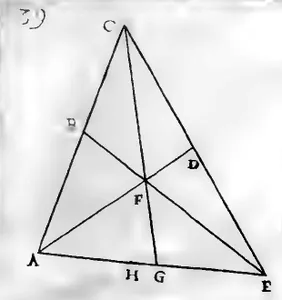
Proposition III: Proportional Side Divisions and Bisected Base
Proposition III · Theorem III (p. 39, Tab. 5, Fig. 39)
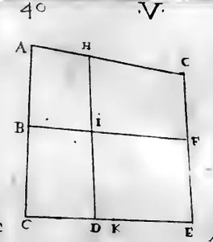
Proposition IV: Proportionally Divided Quadrilateral
Proposition IV · Theorem IV (p. 40, Tab. 5, Fig. 40)
Proposition V: Iterated Nested Ceva Triangles
Proposition V · Theorem V (pp. 40–41, Tab. 5, Fig. 41)
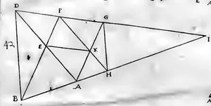
Proposition VI: Parallelism via Midpoints and Exterior Vertex Line
Proposition VI · Theorem VI (pp. 41–43, Tab. 5, Fig. 42)
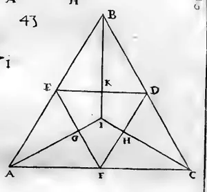
Proposition VII: Concurrency of Outer Vertices with Inscribed Midpoints
Proposition VII · Theorem VII (pp. 43–44, Tab. 5, Figs. 43 & 45)
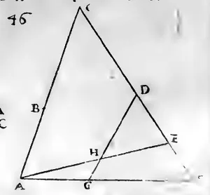
Proposition VIII: Segment Ratio on a Cevian Intersecting a Chord
Proposition VIII · Theorem VIII (p. 44, Tab. 5, Fig. 46)
Proposition IX & Lemmas IV–V: Inscribing an Ellipse Given Two Contact Points
Proposition IX · Problem I (pp. 44–46, Tab. 5, Fig. 44)
Proposition X: Squared Segment Ratios on Three Parabola Tangents
Proposition X · Theorem IX (p. 47, Tab. 6, Fig. 50)
Proposition XI: Concurrency on Three Tangents to a Parabola
Proposition XI · Theorem X (pp. 47–48, Tab. 6, Fig. 50)
Proposition XII: Cubic Area Ratio on Three Parabola Tangents
Proposition XII · Theorem XI (pp. 48–49, Tab. 6, Fig. 50)
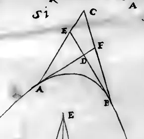
Proposition XIII: Tangent-Diameter Ratio in a Conic Section
Proposition XIII · Problem II (p. 49, Tab. 6, Figs. 51 & 52)
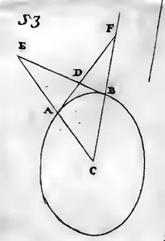
Proposition XIV: Concurrency on Three Tangents to a Circle or Ellipse
Proposition XIV · Theorem XII (pp. 49–51, Tab. 6, Figs. 52–54 & Tab. 7, Figs. 55–56)
Proposition XV: Rectangle Ratio Along Conic Tangents
Proposition XV · Theorem XIII (p. 51, Tab. 7, Fig. 56)
Proposition XVI & Lemma VI: Concurrency of Angle Bisectors (Incenter)
Proposition XVI · Theorem XIV (pp. 51–52, Tab. 7, Fig. 57)
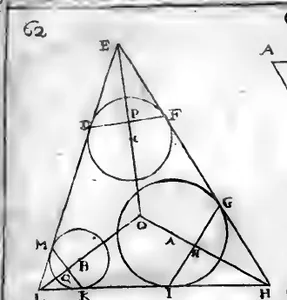
Proposition XVII: Concurrency from Three Inscribed Pairwise Tangent Circles
Proposition XVII · Theorem XV (p. 53, Tab. 8, Fig. 62)
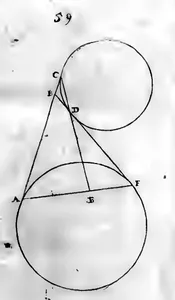
Proposition XVIII: Equal Rectangles on Two Circles Tangent to Two Lines
Proposition XVIII · Theorem XVI (p. 53, Tab. 7, Fig. 59)
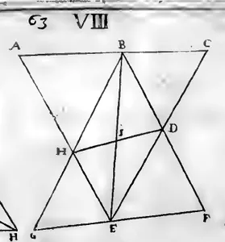
Proposition XIX: Fifteen Cases of Reciprocally Inscribed Triangles
Proposition XIX · Problem III (pp. 54–57, Tab. 8, Figs. 63–66)
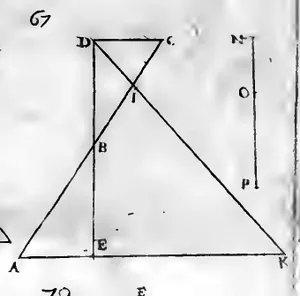
Proposition XX: Parallel Segments Cut by a Transversal
Proposition XX · Theorem XVII (p. 58, Tab. 8, Fig. 67)
Proposition XXI & Scholium: Optical Rangefinder & End of Static Construction
Proposition XXI · Theorem XVIII (p. 59, Tab. 8, Fig. 67)